NGINX Ingress를 사용하다 Gateway API를 접하면, Gateway가 서비스별로 만드는 Ingress에 대응하는 것처럼 보이기 쉽다. 그렇게 생각하면 WebUI와 Jupyter에 Gateway를 하나씩 만드는 구성을 예상하게 된다.
기존 Ingress의 도메인·경로 전달 규칙에 가까운 자원은 HTTPRoute다. 여러 HTTPRoute가 사용할 접속 입구는 Gateway로 지정한다.
우리 환경에서는 Gateway에 따라 실제 Envoy 프록시와 NodePort Service도 생성된다. 여기서 Gateway마다 프록시를 따로 실행할지, 여러 Gateway가 프록시를 공유할지를 선택할 수 있다.
이 관계를 이해하려면 먼저 설정 객체와 실행 프로그램을 구분해야 한다.
1. 기존 Ingress 구성과 무엇이 대응하는가
일반적인 ingress-nginx 구성에서는 먼저 NGINX 컨트롤러와 외부 접속용 Service를 설치한다. 이후 각 서비스의 접속 규칙을 Ingress로 추가한다.
이 관계를 현재 구성에 맞추면 다음과 같다.
| 기존 Ingress 구성 | 현재 Envoy Gateway 구성 |
|---|---|
IngressClass |
GatewayClass |
| NGINX Ingress 컨트롤러 | Envoy Gateway 컨트롤러 |
| Ingress의 도메인·경로·목적지 규칙 | HTTPRoute |
| 프록시 설치 시 정한 외부 접속·배포 구성 | Gateway와 구현체별 설정을 통해 구성 |
완전한 일대일 대응은 아니다. 예를 들어 Ingress에 넣던 TLS 인증서 설정은 Gateway의 리스너 쪽으로 옮겨진다. 기존에 함께 다루던 설정을 접속 입구와 전달 규칙으로 나눠 표현한다. Gateway API의 Ingress 이전 안내
아래 점선은 실제 통신 경로가 아니라 설정이 적용되는 관계를 나타낸다.

기존 공용 NGINX에 Jupyter Ingress를 추가하던 것처럼, 현재는 공용 Gateway에 Jupyter HTTPRoute를 연결한다.
2. GatewayClass·컨트롤러·Gateway·Envoy의 역할
이름이 비슷하지만 각각 다른 대상이다.
| 대상 | 정체와 역할 |
|---|---|
| GatewayClass | Gateway를 어떤 컨트롤러가 처리할지 등을 지정하는 설정 객체 |
| Gateway | 접속 입구와 리스너 구성을 요청하는 설정 객체 |
| Envoy Gateway 컨트롤러 | 설정을 읽어 Envoy 프록시와 Service를 생성·관리하는 프로그램 |
| Envoy 프록시 | 실제 연결을 받아 HTTPS 처리와 요청 전달을 수행하는 프로그램 |
| HTTPRoute | 요청 조건과 전달할 Service를 지정하는 설정 객체 |
Gateway에는 다음과 같이 사용할 GatewayClass를 적는다.
kind: Gateway
metadata:
name: llm-gateway
spec:
gatewayClassName: envoy
이 설정은 envoy라는 이름의 GatewayClass를 참조한다. 해당 GatewayClass에 연결된 Envoy Gateway 컨트롤러가 Gateway를 처리한다.
하나의 GatewayClass를 여러 Gateway가 참조할 수 있다.
Gateway A ──┐
Gateway B ──┼─ 참조 → GatewayClass: envoy
Gateway C ──┘ │
▼
Envoy Gateway 컨트롤러가 관리
이 관계는 같은 관리 프로그램이 여러 Gateway를 처리한다는 뜻이다. 실제 Envoy 프록시까지 공유할지는 별도의 배포 설정에 따라 결정된다.
3. 기본 배포에서는 Gateway 개수만큼 프록시 실행 자원이 생긴다
우리 Envoy Gateway 구성에서는 기본적으로 Gateway 하나마다 NodePort Service 하나와 Envoy Deployment 하나가 생성된다. 각 Deployment의 복제본이 1개이므로 Envoy Pod도 하나씩 실행된다.
Gateway YAML을 등록하면 컨트롤러가 실제 실행 자원을 준비한다.

우리 설정에서 Service가 NodePort로 만들어지는 이유는 Gateway가 참조하는 EnvoyProxy에 다음과 같이 지정했기 때문이다.
kind: EnvoyProxy
metadata:
name: llm-proxy-config
spec:
provider:
type: Kubernetes
kubernetes:
envoyService:
type: NodePort
따라서 병합하지 않는 우리 기본 구성의 개수 관계는 다음과 같다.
| Gateway 개수 | NodePort Service | Envoy Deployment | Envoy Pod |
|---|---|---|---|
| 1개 | 1개 | 1개 | 1개 |
| 2개 | 2개 | 2개 | 2개 |
| 3개 | 3개 | 3개 | 3개 |
Pod 개수는 각 Deployment의 복제본이 1개라는 조건에서 계산한 것이다. 복제본을 늘리면 Pod 개수도 늘어난다.
mergeGateways를 사용하면 이 기본 배포 관계가 달라진다. 여러 Gateway의 설정을 공용 Envoy 배포에 합칠 수 있다. Envoy Gateway 배포 방식
4. 리스너와 HTTPRoute는 무엇을 나누는가
Gateway에는 접속을 받을 조건인 리스너를 지정한다.
name: jupyter-https
hostname: jupyter.k8s.test
port: 443
protocol: HTTPS
tls:
mode: Terminate
certificateRefs:
- name: jupyter-tls
이 설정은 다음 동작을 요청한다.
jupyter.k8s.test의 HTTPS 접속을 443번으로 받고,jupyter-tls인증서를 사용한다.
HTTPRoute는 이 입구에 연결할 전달 규칙이다.
parentRefs:
- name: llm-gateway
sectionName: jupyter-https
hostnames:
- jupyter.k8s.test
rules:
- backendRefs:
- name: jupyterlab
namespace: lora-lab
port: 8888
연결하는 대상은 다음과 같다.
| 설정 | 가리키는 대상 |
|---|---|
parentRefs.name |
사용할 Gateway |
parentRefs.sectionName |
그 Gateway 안의 리스너 |
backendRefs.name |
전달할 Service의 이름 |
backendRefs.namespace |
그 Service가 있는 네임스페이스 |
backendRefs.port |
그 Service에 선언한 포트 |
리스너와 HTTPRoute는 별도 서버로 실행되지 않는다. 실제 Envoy 프로그램이 두 설정을 함께 적용한다.
또한 하나의 리스너에도 여러 HTTPRoute를 연결할 수 있다. 예를 들어 쇼핑몰의 같은 HTTPS 입구에 상품·주문·회원 HTTPRoute를 각각 붙일 수 있다. 각 서비스의 전달 규칙을 독립적으로 수정하고 관리하기 위한 구조다.
5. 세 가지 구성은 무엇이 다른가
세 방식의 차이는 두 질문으로 구분할 수 있다.
- Gateway 설정을 하나로 관리할 것인가, 여러 객체로 나눠 관리할 것인가?
- 실제 Envoy 프록시와 Service를 공유할 것인가, 따로 실행할 것인가?
아래 예시는 모두 Envoy Deployment의 복제본이 1개이고, Service 유형을 NodePort로 선택한 경우다. 그림은 설정이 실제 실행 자원에 반영되는 관계를 나타낸다.
구성 ① Gateway 하나에 리스너 여러 개

접속 설정을 한 Gateway에서 관리하고, 실행 자원도 공유한다.
같은 관리자가 여러 서비스의 도메인·인증서·접속 정책을 함께 관리할 때 간단하다.
리스너를 추가한다고 Service와 Pod가 한 벌 더 생기지는 않는다. 같은 HTTPS 443 포트에서 서로 다른 도메인을 처리하도록 구성할 수 있다.
구성 ② Gateway 여러 개를 각각 배포

접속 설정도 나누고, 실행 자원도 나눈다.
서비스별 프록시의 CPU·메모리, 복제본 수, 업데이트를 따로 관리할 수 있다. 다만 같은 노드나 네트워크를 사용한다면 그 기반까지 완전히 분리되는 것은 아니다.
각 Service에는 서로 다른 NodePort가 필요하다. HTTPS 포트만 예로 들면 다음과 같다.
WebUI Service: 노드의 30443 → WebUI용 Envoy
Jupyter Service: 노드의 30444 → Jupyter용 Envoy
앞단 HAProxy도 요청을 어느 접속점으로 보낼지 구성해야 한다.
구성 ③ Gateway 여러 개를 mergeGateways로 병합

Gateway 객체는 여러 개로 유지하고, 실제 실행 자원은 공유한다.
Gateway 두 개를 하나의 Gateway 객체로 바꾸는 기능은 아니다. 컨트롤러가 여러 Gateway의 리스너 설정을 모아 공용 Envoy에 반영하는 방식이다.
세 방식의 개수를 나란히 놓으면 다음과 같다.
| 구성 | Gateway | Envoy Deployment | NodePort Service | Envoy Pod |
|---|---|---|---|---|
| ① Gateway 하나, 리스너 여러 개 | 1개 | 1개 | 1개 | 1개 |
| ② Gateway 두 개, 각각 배포 | 2개 | 2개 | 2개 | 2개 |
| ③ Gateway 두 개, 병합 배포 | 2개 | 1개 | 1개 | 1개 |
6. mergeGateways는 왜 있고 언제 사용하는가
병합 기능의 목적은 접속 설정의 관리 범위를 나누면서, 프록시 실행 자원과 외부 접속점을 공유하는 것이다.
WebUI 팀과 Jupyter 팀이 각자의 도메인과 인증서까지 관리한다고 가정해보자.
WebUI 팀의 네임스페이스
└─ WebUI Gateway
├─ chat.example.com 리스너
└─ WebUI용 인증서 참조
Jupyter 팀의 네임스페이스
└─ Jupyter Gateway
├─ notebook.example.com 리스너
└─ Jupyter용 인증서 참조
Gateway를 나누면 각 팀에 자기 Gateway를 수정할 권한을 줄 수 있다. 각자 도메인·리스너·인증서 설정을 바꿀 수 있고, 다른 팀의 Gateway를 함께 편집할 필요가 없다.
HTTPRoute만 나누는 것과도 차이가 있다. HTTPRoute를 나누면 전달 조건과 목적지를 각자 관리할 수 있지만, 리스너와 인증서 참조는 여전히 Gateway에 있다. 그 부분까지 관리 범위를 나누려면 Gateway 등의 접속 설정도 별도로 소유할 방법이 필요하다.
그런데 Gateway를 기본 방식으로 각각 배포하면 Envoy와 Service도 각각 생긴다. 운영자가 다음과 같이 판단할 수 있다.
설정은 팀마다 따로 관리해야 한다. 하지만 트래픽이 적고 같은 외부 접속망을 사용하니, 프록시 실행 자원은 공유해도 된다.
이때 mergeGateways가 의미를 갖는다.
Envoy Gateway에서는 GatewayClass에 연결된 EnvoyProxy의 mergeGateways 설정으로, 같은 GatewayClass에 속한 Gateway들의 리스너를 공용 프록시 배포에 합칠 수 있다.
GatewayClass를 함께 참조하는 것만으로 자동 병합되는 것은 아니다. 별도로 병합을 활성화해야 한다. 병합할 리스너 사이에서 포트·프로토콜·호스트 이름 조합도 충돌하지 않아야 한다. 공식 병합 구성 설명
병합 후에는 다음을 공유한다.
- Envoy의 CPU·메모리와 처리 용량
- 프록시의 복제본 수와 업데이트
- 공용 프록시 장애의 영향
- 외부에 제공하는 Service와 접속점
따라서 Gateway 객체의 소유권과 수정 권한을 나눌 수는 있지만, 프록시 실행 환경까지 격리되는 기능은 아니다.
7. 우리 환경에서는 왜 Gateway 하나를 선택했는가
WebUI와 Jupyter는 같은 개인 클러스터에서 같은 관리자가 운영하고, 같은 HAProxy 경로로 접속한다.
두 서비스의 Gateway 설정을 서로 다른 팀이나 네임스페이스의 소유로 분리할 필요가 없었다. 프록시의 자원량이나 업데이트를 따로 운영해야 한다는 요구도 없었다.
그래서 구성 ①인 Gateway 하나에 리스너 여러 개를 두는 방식을 선택했다.
HTTPS 관련 설정은 다음과 같다.
Gateway: llm-gateway
├─ WebUI HTTPS 리스너
│ 도메인: chat.k8s.test
│ 인증서: webui-tls
│ 연결된 규칙: WebUI HTTPRoute
│
└─ Jupyter HTTPS 리스너
도메인: jupyter.k8s.test
인증서: jupyter-tls
연결된 규칙: Jupyter HTTPRoute
기존 HTTP 80번 리스너도 별도로 있으며, 위에는 HTTPS 부분만 표시했다.
두 서비스가 공유하는 실제 접속 경로는 다음과 같다.
맥 브라우저
↓
HAProxy VIP:443
↓
기존 Envoy Service의 NodePort 30443
↓
공용 Envoy 프록시
├─ WebUI HTTPRoute → WebUI Service의 대상 Pod
└─ Jupyter HTTPRoute → Jupyter Service의 대상 Pod
우리 환경에서 Gateway 두 개를 만든 뒤 병합해도 실행 자원의 개수는 같게 만들 수 있다. 하지만 설정을 따로 소유할 필요가 없었기 때문에, Gateway 객체와 병합 설정을 추가할 이점이 작았다.
8. 어떤 기준으로 선택하는가
| 필요한 운영 방식 | 적합한 구성 |
|---|---|
| 한 관리자가 접속 설정을 함께 관리하고 프록시도 공유 | ① Gateway 하나 + 여러 리스너 |
| Gateway를 별도로 관리해야 하지만 프록시 자원과 접속점은 공유 | ③ 여러 Gateway + 병합 |
| 프록시 자원·확장·업데이트를 독립적으로 관리 | ② 여러 Gateway + 별도 배포 |
도메인이 두 개라는 사실만으로 Gateway를 두 개 만들지는 않는다. 접속 설정의 소유권을 나눌 필요와, 실제 프록시를 따로 운영할 필요를 각각 판단한다.
새로운 구성에서 리스너의 관리 권한을 여러 주체에게 나누려는 경우에는 ListenerSet이라는 선택지도 있다. 최신 Envoy Gateway 문서는 이 목적의 신규 구성에서 이를 우선 검토하도록 권장한다. 실제 도입 여부는 설치된 Gateway API와 컨트롤러 버전의 지원을 확인해 결정한다. 공식 권장 사항